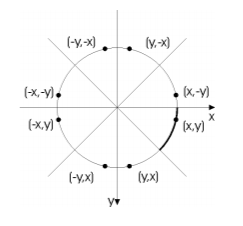

En graficacion, el algoritmo "midpoint circle" es un algoritmo utilizado
para determinar los puntos necesarios para dibujar un circulo. El algoritmo
es una variante del algoritmo de la linea de Bresemham, por lo cual es aveces
conocido como algoritmo de circulo Bresemham, aun que ne realidad no inventada
por Bresemham.
El algoritmo comienza en consecuencia con el circulo de la ecuacion x2 + y2 = r2.
Asi, el centro del circulo se encuentra en (0,0). Consideramos que solo la primera
el octante primeray trazar una curva que comienza en le punto (r,0) y hacia arriba
los ingresos y a la izquierda, llegando al angulo de 45°.
La direccion "rapida" aqui es la dieccion vertical. El algoritmo hace simpre un paso
en la direccion positiva (hacia arriba), y de vez en cuando tambien tiene que hacer
un paso en la "lenta" la direccion, la direccon x negativa.
De la ecuacion de un circulo se obtiene la ecuacion tranformada x2 + y2 - r2 = 0
donde r2 se calcula una sola vez durante la inicializacion, y por lo tanto para la
cordenada x. Ademas tenemos que ańadir las coordenada del punto medio al establecer
un pixel. Estas adiciones frecuentas entero no limitan el rendimiento de mucho,
ya que puede prescindir de los cuadrados (root) los calculos en el lazo interno,
a su vez. Una vez mas el cero en la ecuacion del circulo tranformado se sustituye
por el termino de error.
La inicializacion del termino de error se deriva de un desplazamiento de pixel
y medio en la salida. Hasta la interseccion con la linea perpendicular, esto
conduce a un valor acumulado de r en el termino de error, de modo que este
valor se utiliza para la inicializacion.

Implementacion del algoritmo en Java
import javax.swing.*;
import java.awt.*;
import java.util.*;
public class Circulo extends JPanel{
private int xc, yc, r;
private ArrayList<Punto> puntos;
public Circulo(int xc, int yc, int r){
this.setBounds(0, 0, 500, 500);
this.xc = xc;
this.yc = yc;
this.r = r;
this.puntos = new ArrayList<Punto>();
algoritmo();
}
public void algoritmo(){
int x ,y, d;
x = 0;
y = r;
d = 1 - r;
pintar(x, y);
while(x <= y){
x = x + 1;
if(d < 0){
d = d + 2 * x + 3;
}else{
y = y - 1;
d = d + 2 * (x - y) + 5;
}
pintar(x, y);
}
}
private void pintar(int x, int y){
puntos.add(new Punto(xc + x, yc + y));
puntos.add(new Punto(xc - x, yc + y));
puntos.add(new Punto(xc + x, yc - y));
puntos.add(new Punto(xc - x, yc - y));
puntos.add(new Punto(xc + y, yc + x));
puntos.add(new Punto(xc - y, yc + x));
puntos.add(new Punto(xc + y, yc - x));
puntos.add(new Punto(xc - y, yc - x));
repaint();
}
@Override
public void paint(Graphics g){
super.paintComponents(g);
for(Punto p : puntos){
p.dibujar(g);
}
}
public static void main(String[] args){
JFrame f = new JFrame("Bresenham");
f.setLayout(null);
f.setBackground(Color.WHITE);
Circulo circulo = new Circulo(250, 250, 100);
f.add(circulo);
f.setSize(500, 500);
f.setVisible(true);
f.setLocationRelativeTo(null);
f.setDefaultCloseOperation(JFrame.EXIT_ON_CLOSE);
}
private class Punto{
public int x ,y;
public Punto(int x ,int y){
this.x = x;
this.y = y;
}
public void dibujar(Graphics g){
g.setColor(Color.RED);
g.drawOval(x, y, 1, 1);
g.fillOval(x, y, 1, 1);
}
}
}